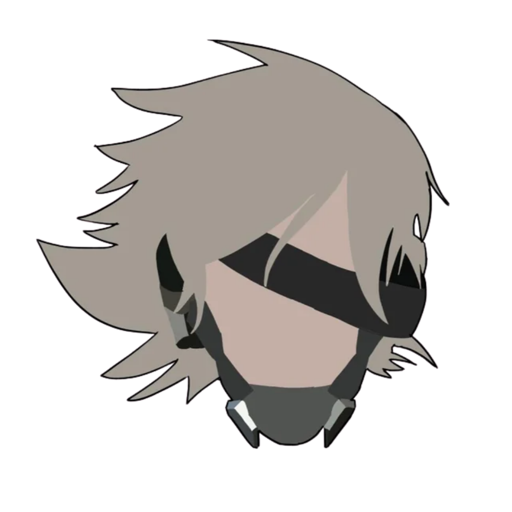

INFORMAÇÕES GERAIS
Raiden, cujo nome verdadeiro é Jack, é um cyborg ninja e protagonista de Metal Gear Rising: Revengeance.
Ele atua como agente de segurança privada, utilizando um corpo quase totalmente cibernético que lhe concede força, velocidade e resistência muito acima das capacidades humanas. Sua principal arma é a katana de alta frequência, capaz de cortar praticamente qualquer material.
Antes dos eventos do jogo, Raiden foi uma criança-soldado, conhecido como “Jack the Ripper”, passado que o persegue e entra em conflito com sua tentativa de viver como herói e protetor.
Em MGR, ele é forçado a encarar novamente sua natureza violenta enquanto enfrenta organizações militares e figuras como Jetstream Sam e o senador Armstrong.